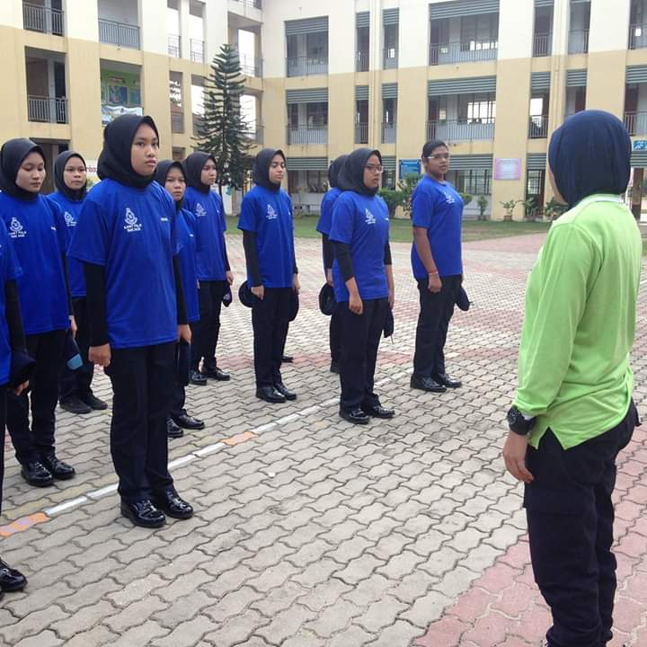
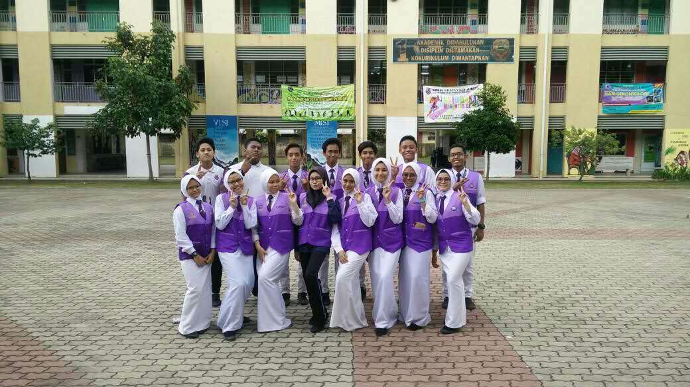
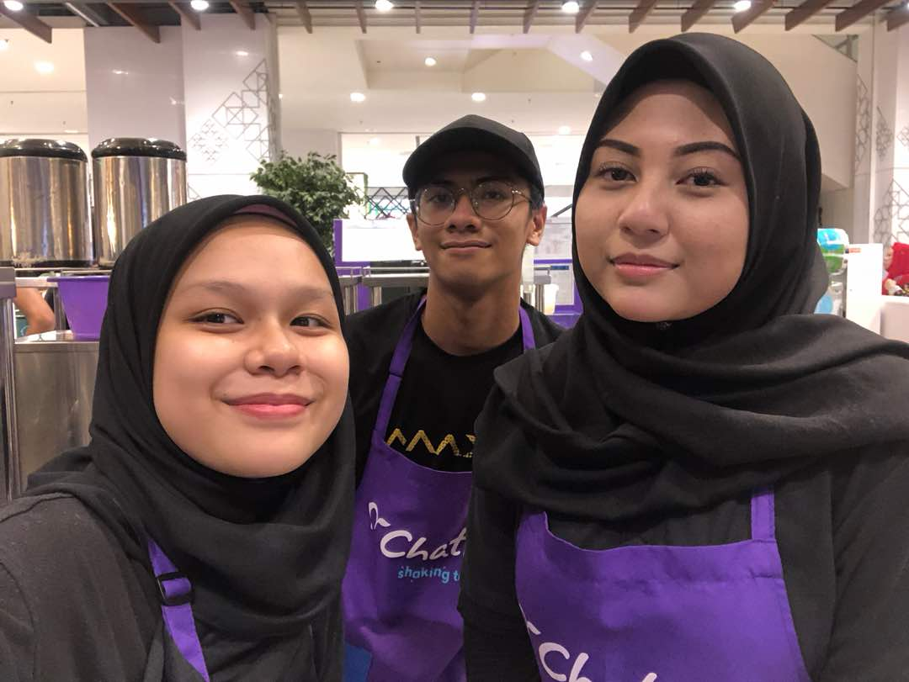
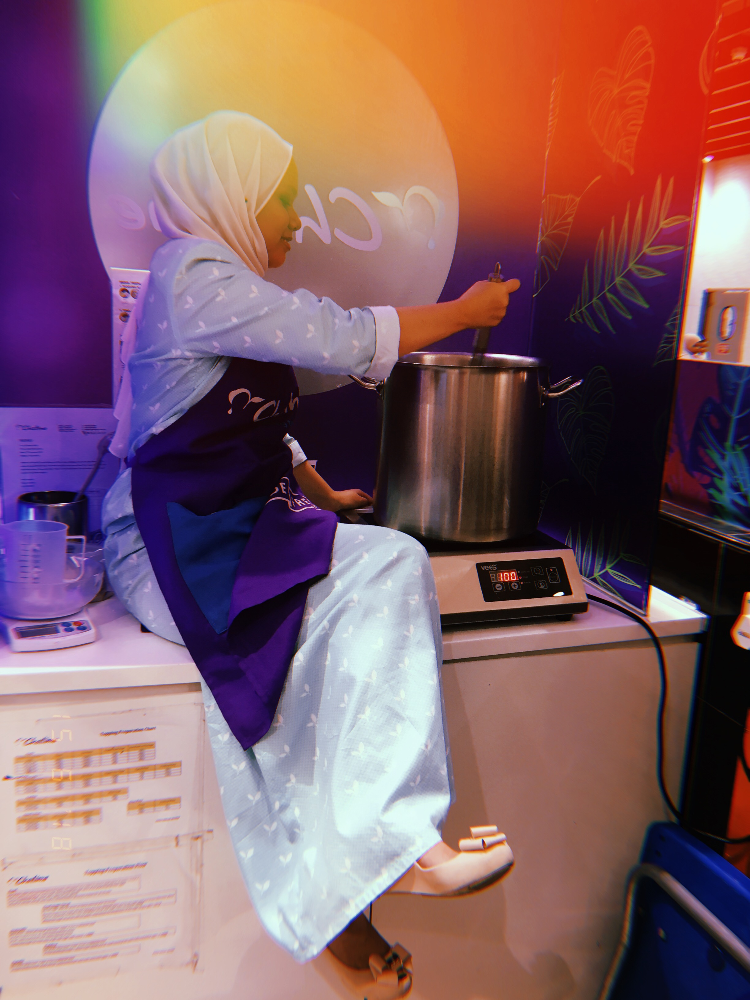

When I was in high school, I joined a uniform body of Police Cadets. I joined the Police Cadets team from Form 1 until Form 5. In 2016, I participated in a district level Marching Competition and won second place. After getting tired of all the training to face winning the competition and finally we succeeded. From 2014 to 2017, my friends and I would love to participate in a police training that organized by the police for students that joined Police Cadets.

In 2015, I joined one of my school's peer coaching clubs. This club has helped me to interact with many people, I regularly attend camps organized by these peer clubs. Most of the camps are organized by this club on the Beaches and islands. In every camp we attend, we will be sharing groups by doing ice-breaking and the activities we always encourage are explorace and night walks. Whenever the school does sports activities such as sports day, peers will conduct aerobics for our students before conducting the next activities.

Before entering university, i worked as a tearista at a store called "Chatime". This shop are famous with Milk Tea With pearl and others. While working at that store, I learned how to cook Pearl as known as Bubble, Pudding and Grass Jelly. It was one of the most meaningful experiences for me. I worked there for 3 months and within 3 months I was transferred to another branch for 2 weeks because at that time,the branch was newly opened and had no experienced staff.
 